Sanuki, Kagawa: things to do, food and stays
Sanuki · Kagawa
Sanuki
Highlighted on the Kagawa map.
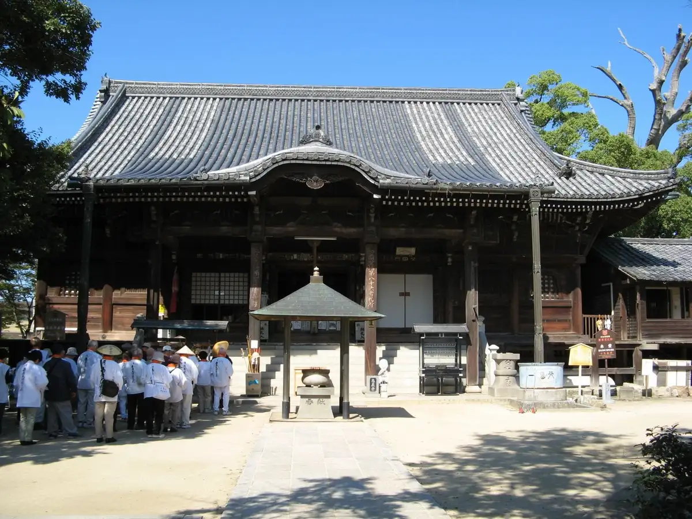
Stay
SAND BEIGE
SAND BEIGE
mimoro
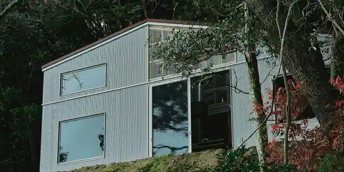
mimoro
Inn in Tsuda, Sanuki with a quiet countryside setting.
Villa JacoOⅡ
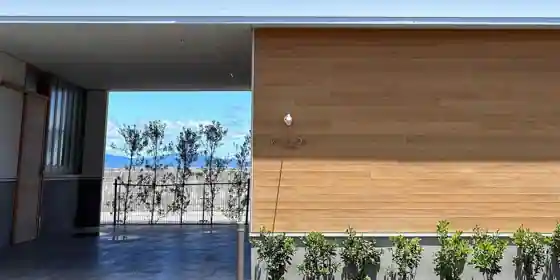
Villa JacoO
SETO CLAS TSUDA 瀬戸内TABITO
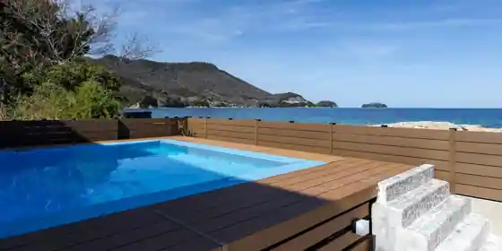
SETO CLAS TSUDA Setochi TABITO
Inn in Tsuda, Sanuki with a sauna.
Villa Jaco◯ーヴィラじゃこまるー
Villa Jaco Villa Jakomaru
SETO CLAS TSUDA THE BEACH RESORT C
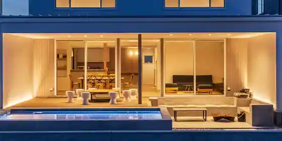
SETO CLAS TSUDA THE BEACH RESORT C
SETO CLAS TSUDA THE BEACH RESORT B
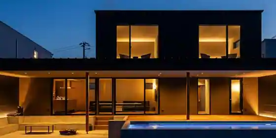
SETO CLAS TSUDA THE BEACH RESORT B
SETO CLAS TSUDA THE BEACH RESORT A
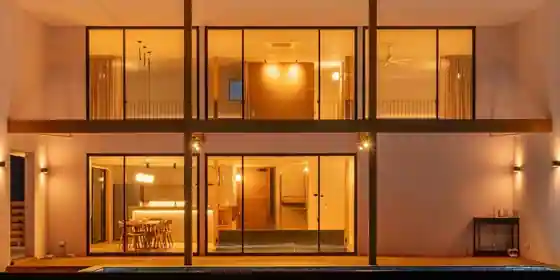
SETO CLAS TSUDA THE BEACH RESORT A
Inn in Tsuda, Sanuki with scenic views.
アール・ヴィラ さぬき津田
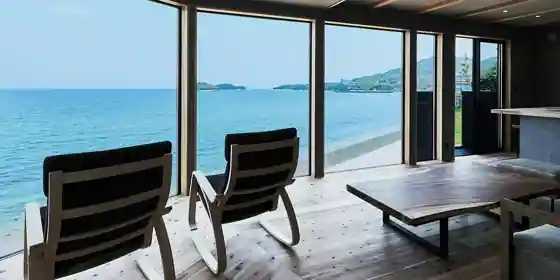
Aru Villa Sanuki Tsuda
Inn in Tsuda, Sanuki with one group per day.
いしや旅館
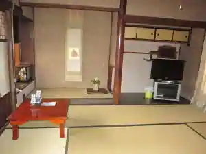
Ishiya Ryokan
とまばりゲストハウス
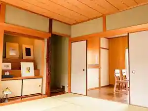
Tomabari Guesthouse
瀬戸内TABITO
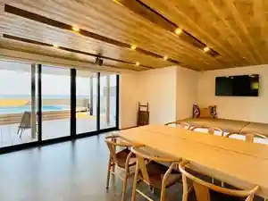
Setochi TABITO
Inn in Tsuda, Sanuki with a sauna.
Dining
手打うどん 源内
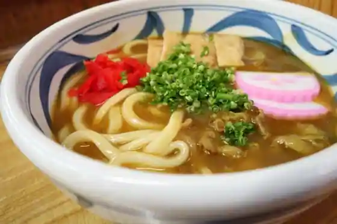
Teuchi Udon Gennai
麺処まはろ
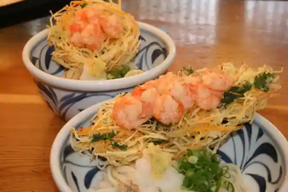
Men Tokoro Maharo
麺でぃ～
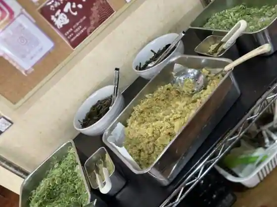
Men Di ~
溜
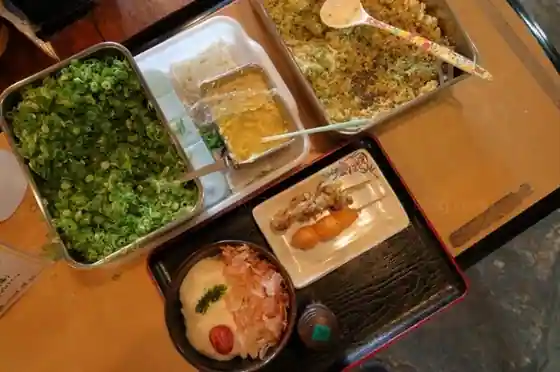
Tame
羽立
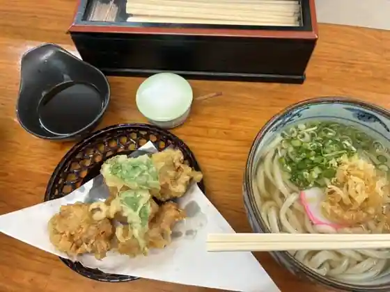
Hane Ritsu
八十八庵
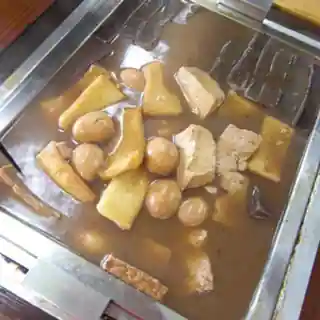
Yasohachi Iori
津田の松原サービスエリア（上り線） スナックコーナー
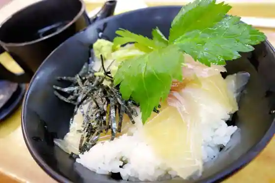
Tsuda No Matsubara Sabisueria (Nobori Sen) Sunakkukona
あなぶき家 津田の松原SA 上り線うどんコーナー
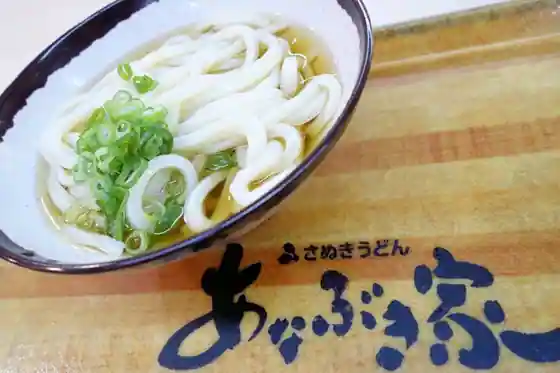
Anabuki Ie Tsuda No Matsubara SA Nobori Sen Udon Kona
あなぶき家 津田の松原サービスエリア（下り線）
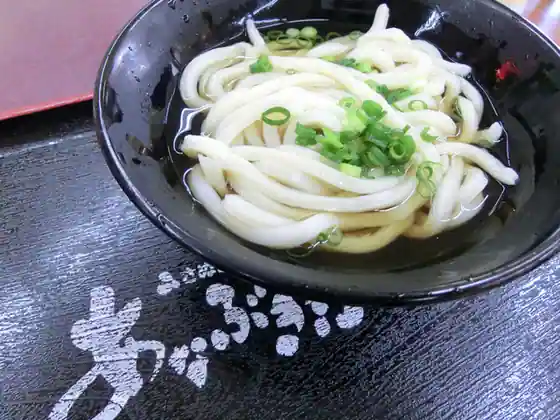
Anabuki Ie Tsuda No Matsubara Sabisueria (Kudari Sen)
牟礼製麺
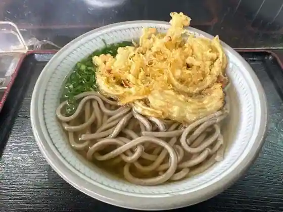
Mure Seimen
ラーメン山村 本店
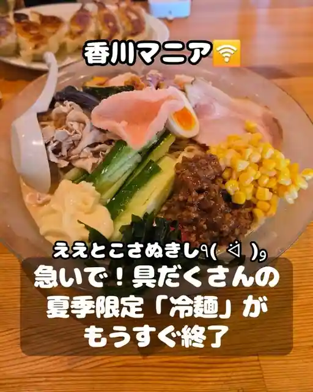
Ramen Sanson Hon
らぁ麺Labo 七施
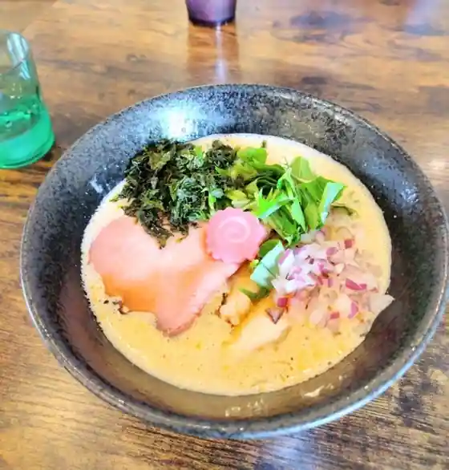
Ra Men Labo Shichi Shi
大川オアシス
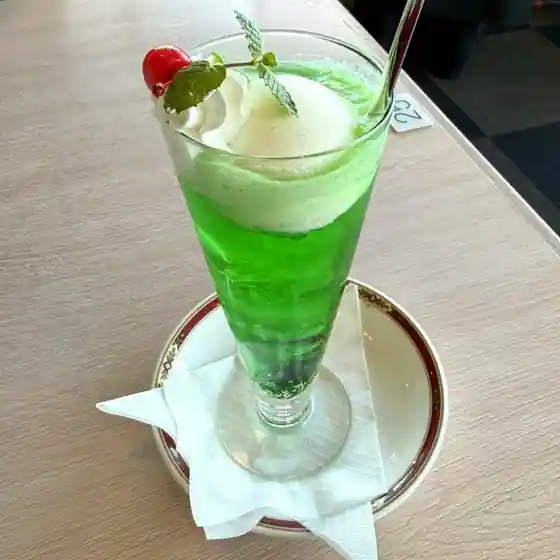
Okawa Oashisu
道の駅 牧場カフェ 369
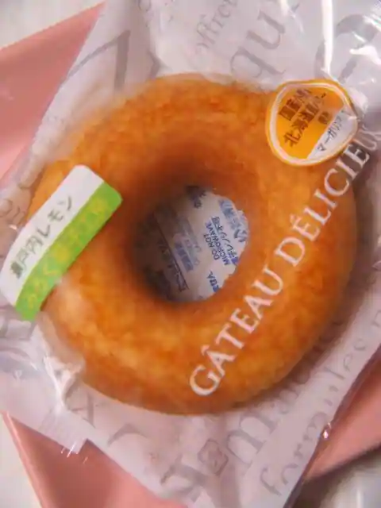
Michi No Eki Bokujo Cafe 369
こがね製麺所 寒川店
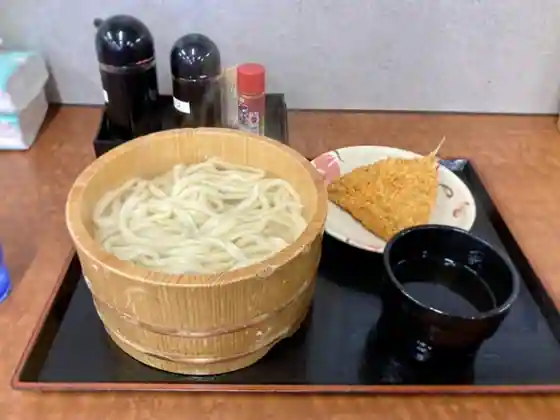
Kogane Seimen Tokoro Samukawa
かき焼き わたなべ
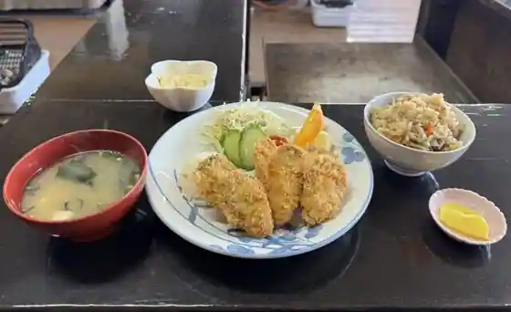
Kaki Yaki Watanabe
シセン
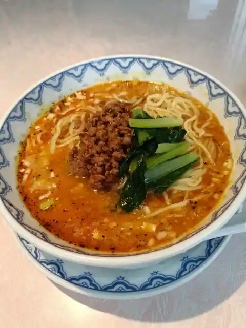
Shisen
手打うどん まるたけ
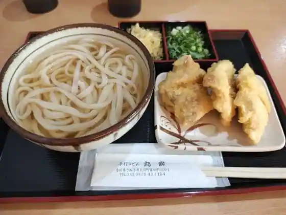
Teuchi Udon Marutake
松原うどん
Matsubara Udon
セルフうどん 富士山
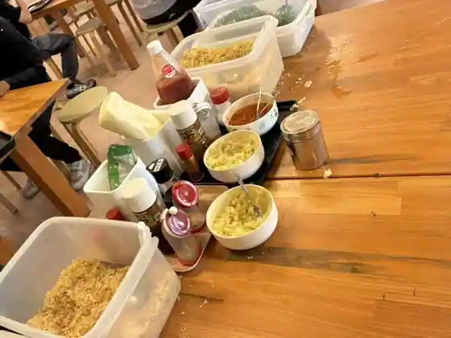
Serufu Udon Fujisan
若潮
Wakashio
寿司処 ここも 志度店
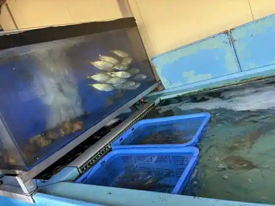
Sushi Tokoro Kokomo Shido
元気
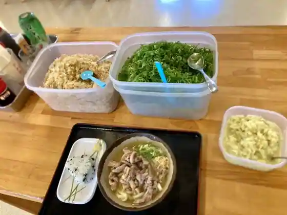
Genki
福菜
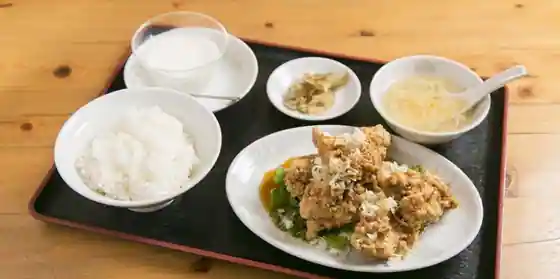
Fuku Na
Sights
Shido Tera
Nagao Tera
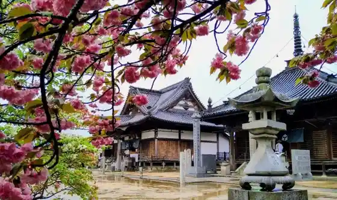
Tsuda no Matsubara
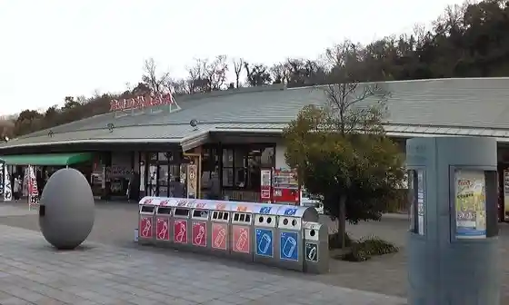
Ogushi Peninsula
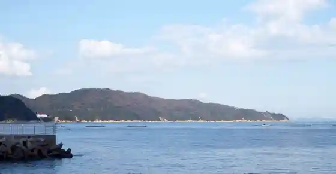
Shido Eki
Iwashimizu Shrine